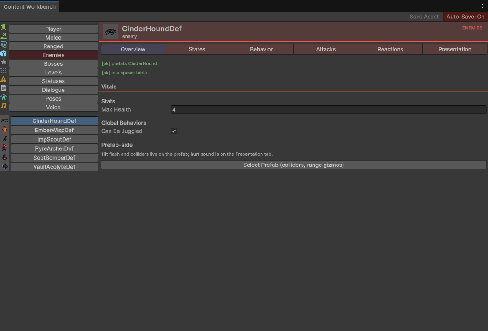

01The authoring model — one asset, whole brain
An enemy's entire behavior is a single EnemyDefinition asset. Its states are sub-assets stored inside the same .asset file — click the foldout arrow on the asset in the Project window and the whole FSM is right there.
| What | Where |
|---|---|
| Enemy FSM definitions (states as sub-assets) | Assets/_Game/Enemies/Data/EnemyDefinitions/*.asset — ten of them: ImpScoutDef, CinderHoundDef, EmberWispDef, PyreArcherDef, SootBomberDef, VaultAcolyteDef, KragDef, CinderShepherdDef, PyreRegentDef, DemonKingDef |
| Shared transition rules (referenced by every def) | Assets/_Game/Enemies/Data/EnemyDefinitions/SharedRules/ — Dy_JuggleCondition, Dy_NotDeadCheck, Dy_NotExecuted |
| Execution definitions | Assets/_Game/Enemies/Data/ExecutionDefinitions/ — ten of them: Explosion, Firestorm, OffScreenKill, SamuraiSlice, plus Groundbreaker, Meteor, Pinfall, Nailed, Skyhook, Overload |
| Enemy prefabs | Assets/_Game/Enemies/Prefabs/ — one per definition, plus Projectile_PyreShot |
| Boss staging assets | Ten, since 2026-08-15. Four bespoke: Assets/_Game/Biomes/Emberfall/Boss_Krag.asset, Assets/_Game/Biomes/Boss_CinderShepherd.asset, Assets/_Game/Biomes/Boss_PyreRegent.asset, Assets/_Game/Biomes/Boss_DemonKing.asset. Six stopgaps — Assets/_Game/Biomes/Boss_Stopgap_{EmberfallDepths,AshenVaults,Mire,Spire,Hollow,Gale}.asset — each of which promotes a mob prefab that biome's own spawn table already fields (ImpScout, VaultAcolyte, EmberWisp, PyreArcher, CinderHound, and VaultAcolyte again for Gale), so every biome holds a distinct boss asset — Gale and the Ashen Vaults share a creature, which is recorded in that row. They are placeholders and their names say so; the fights they lack are tracked in Documentation/OUTSTANDING.md, the row "Six bosses are promoted mobs, and they do not fight like bosses". |
| Spawn tables | Assets/_Game/Biomes/Emberfall/SpawnTable_*.asset + Assets/_Game/Biomes/Debug/SpawnTable_Debug.asset |
| Runtime code (you should never need to touch it) | Assets/_Game/Enemies/Code/ and Assets/_Game/Systems/Run/ |
EnemyDefinition — the top-level fields
Create one with Create ▸ Enemies ▸ Enemy Definition. Beyond the inherited States list and InitialState, it carries exactly six things:
| Field | Default | What it does |
|---|---|---|
MaxHealth | 30 | Hit points. Damage routes through EnemyStateMachine.TakeHit; 0 HP enters the dead state. 0 = no health system: the enemy cannot die from plain damage — executions still kill it. |
ExecutionThreshold | 100 | Execution points this enemy takes before it can be finished — the per-enemy half of the execution economy (the weapon authors the points a hit grants). EnemyStateMachine pushes it into the prefab's CombatStatusManager at Awake, so the component's own serialized 100 only ever applies to a CSM with no definition — the player's, and a bare test rig's. Shipped: 100 everywhere except ImpScoutDef 95 and DemonKingDef 140. |
ExecutionDecaySeconds | 3 | Seconds without an execution hit before the meter starts draining. Adopted into the prefab's CombatStatusManager at Awake beside the threshold, so the prefab's own executionTimeToDecay is dead for any enemy with a definition. |
ExecutionDecayRate | 25 | Points per second the meter drains once that grace has passed. Unlike the threshold, 0 means 0 here — either field at 0 authors a meter that never drains, which is a campaign's knob, not a missing value. Both sit on the Workbench's Vitals section right under Execution Threshold; until 2026-08-13 they were prefab-only, so the Workbench could tune the threshold and not the thing that empties it. |
CanBeJuggled | true | When on, a swing whose IsLauncher is set (the up-attacks) can put the enemy airborne, in one hit. Off, nothing can. The four bespoke bosses ship with this off; three of the six stopgap bosses (ImpScout, CinderHound, PyreArcher) can still be juggled, because the flag lives on the shared EnemyDefinition and clearing it for the boss would clear it for every one of that creature in the game. |
Executions | empty | List of ExecutionDefinition assets this enemy can be finished with (§05). All ten shipped ones are reusable and differ by TRIGGER rather than by animation, so adding one costs no graph wiring. What each enemy carries is now decided by whether it can be juggled. A CanBeJuggled: 1 mob carries all ten. A CanBeJuggled: 0 one carries exactly three — Pinfall, Explosion and Firestorm — because the other seven need an airborne target (four directly, three through a spike, which also begins with a launch) and could never open. Wiring all ten onto a boss listed seven gates that can never be reached, and the Workbench, the wiki and the validator all read that list as what the fight offers. DemonKingDef carried NONE until 2026-08-17 while authoring the highest threshold on the roster (140), so the player filled the meter through the terminal fight and was offered nothing; it carries the same three now. ExecutionEconomyTests asserts both halves. |
The day-to-day editing surface is the Content Workbench — Gleamwood ▸ Content Workbench, or right-click any definition asset ▸ Open in Content Workbench. The Enemies category gives each def six sub-tabs: Overview | States | Behavior | Attacks | Reactions | Presentation.


The shipped roster at a glance
| Definition | HP | Juggle | Chase × | Kit beyond idle / chase / hitstun / juggled / dead |
|---|---|---|---|---|
ImpScoutDef | 100 | yes | 1 | attackCharge → attackLunge (MoveSpeed 8, armor 1) → attackStrike (armor 1) → attackRecover; all 10 executions wired. ExecutionThreshold 95. |
CinderHoundDef | 180 | yes | 1.6 | 4-phase melee chain — the fastest thing in the roster |
SootBomberDef | 60 | yes | 1.1 | A kamikaze, not a chain: attackCharge (plants, armor 99, NextStateName attackStrike) → attackStrike (Damage 3, range 2.75) → NextStateName dead. The attackLunge and attackRecover sub-assets exist in the file and nothing routes into them — dead phases, not kit. |
VaultAcolyteDef | 220 | no | 0.7 | 4-phase melee chain — slow and tanky |
EmberWispDef | 30 | no | float 1.2 | floatChase (Float Chase config) + 4-phase chain. The flying lane is the only one it has. It used to also carry a plain chase config at 1, left over from before the wisp was a flyer — a sub-asset absent from the States list, so never registered, yet editable in the Workbench. Deleted; ExecutionTriggerTests now sweeps every definition for the same shape. |
PyreArcherDef | 50 | yes | 0.9 | shoot (Projectile Attack config: chase → shoot at Distance LessThan 8, shoot → chase by NextStateName) — that is the whole kit. The four attackCharge/Lunge/Strike/Recover sub-assets are in the file with no inbound edge, so the Archer never swings. |
KragDef (boss) [placeholder art] | 400 | no | 1 / enraged 1.35 | attack chain (lunge MoveSpeed 10, strike Damage 2 / range 2) + chaseEnraged (at half health) + slam chains (slamStrike Damage 3, slamStrike2 Damage 4, range 2.5, charges armor 3) |
Krag has no art of its own yet. Krag.prefab plays ClipSets/imp.asset at scale 1.6 and every AnimatorStateName on KragDef is empty, so the first boss is a scaled-up imp that never animates. Imp-shaped is intended; sharing the imp’s clips is not. Tracked in Documentation/OUTSTANDING.md, the row "Krag has no animation of its own". | ||||
CinderShepherdDef (boss) | 600 | no | — | Summon-only, by design, and now the file says so. Six states, all live: idle → relocate (Distance LessThan 7) → summon → relocate → … by NextStateName (SpawnTable_ShepherdCall, Count 2, MaxAlive 5, MaxTotal 10, armor 0 — the punish window). Hitstun recovers into relocate, not idle: idle’s only exit is "player within 7 u", so a bow player standing at 8 used to park a 600-HP boss that never summoned again — one arrow, then nothing. Any hit now restarts the loop, which is what "vulnerable only while calling" meant. The chase / attackCharge / attackLunge / attackStrike / attackRecover sub-assets and the two conditions that served them were template debris with no inbound edge; they were deleted on 2026-08-18, along with the five tunable dead sections they put in the mod template. Whether a summoner whose only threat is 1-damage hounds is boss-grade is a tuning call — Documentation/OUTSTANDING.md, the row "The Cinder Shepherd is summon-only by design, and five dead melee states say otherwise". |
Six more bosses are these mobs promoted. Boss_Stopgap_EmberfallDepths (ImpScout), Boss_Stopgap_AshenVaults (VaultAcolyte), Boss_Stopgap_Mire (EmberWisp), Boss_Stopgap_Spire (PyreArcher), Boss_Stopgap_Hollow (CinderHound), Boss_Stopgap_Gale (VaultAcolyte) each stage the mob prefab above unchanged — same definition, same HP, same kit — under a placeholder displayName ("Warden of …"). No new EnemyDefinition exists for any of them, which is why this table has no rows for them; Gale staged SootBomber until 2026-08-17, so its only attack ended in its own death; it is repointed at VaultAcolyte, which the Gale table also fields and whose chain returns, and BiomeBossRosterTests now refuses a boss whose only damaging state chains to dead. Tracked in Documentation/OUTSTANDING.md, the row "Six bosses are promoted mobs, and they do not fight like bosses". | ||||
PyreRegentDef (boss) | 800 | no | 1.2 / enraged 1.5 | 4-phase chain; at half health → igniteArena (HazardId CrownIgnite) → chaseEnraged + a second attack chain (charge2 armor 3) |
DemonKingDef (final boss) | 800 | no | 0.85 / enraged 1.5 | 14 states, two phases. Phase 1 (he does not chase hard — 0.85 is the slowest lane on any boss): castBolt (Projectile Attack, Damage 1, speed 10, fires at 0.6 normalized) + charge/slam/recover (Damage 1, range 2.2, charge armor 2, recover armor 0). At half health → igniteArena (HazardId DemonPyre) → chaseEnraged + a heavier second chain (Damage 2, range 2.4, charge2 armor 3) + relocate (PointId Perch, farthest-from-player). ExecutionThreshold 140, and Executions carrying the unjuggleable three — Pinfall, Explosion and Firestorm — since 2026-08-17. It was empty before that, which made him the one enemy no finisher could reach while authoring the highest threshold on the roster. |
EnemyContext.MoveSpeed is hardcoded to 3 u/s and nothing reads a speed from any definition, so the chase config's SpeedMultiplier is the per-enemy speed knob — a hound at 1.6 runs at 4.8 u/s, the Vault Acolyte at 0.7 runs at 2.1. That is a debt, and §13 explains it; it is in this table because it is the number you actually reach for.GameContent.ini's [Enemy:<DefName>] section tunes only maxHealth and canBeJuggled — FSMs are authored in Unity; the INI numbers tune them. See Tuning & INI.02States, StateIds, and transitions
Every state sub-asset extends EnemyStateConfig (Assets/_Game/Enemies/Code/Definitions/EnemyStateConfig.cs). These base fields exist on every state:
| Field | Default | What it does |
|---|---|---|
StateName | stamped per type | The string key the state registers under — StateId => StateName, falling back to the sub-asset's name if empty. Chains and fallbacks reference states by this string. |
Animation | none | The clip this state plays — and, for every shipped enemy, its name is the lookup key into the prefab's SpriteClipSet. The FSM plays it directly; there are no controller transitions on either backend. |
AnimatorStateName | empty (= clip name) | Overrides that key when the clip's asset name is not what you want to address. [AnimatorStateRef] dropdown in the inspector, with [MISSING] flags and a "Create New State…" entry. |
AnimatorLayerName | "Base Layer" | Legacy: the layer the target state lives on, folded into the full-path hash the Animator path keys on. The clip-set path ignores it — a graph written from text is told to delete it outright (§11). |
EnterSound + EnterSoundVolume | none / 1 | One-shot played when the state is entered — telegraph on charge phases, impact on strikes, death sting on the dead state. Empty = silent. This is the whole per-state audio system (§09). |
Transitions | empty | List of exits: each entry has a ToState (another sub-asset), Conditions (condition sub-assets), and DynamicConditions (shared rule assets). All conditions in an entry must pass. |
Reserved StateIds — roles the code knows by name
Each config type's Reset() stamps its conventional id. The runtime looks several of them up by hardcoded string:
| StateId | Config (Create ▸ Enemies ▸ States ▸ …) | Role & key fields (defaults) |
|---|---|---|
idle | Idle | Stands still. Base fields only. |
chase | Chase | Runs at the player. SpeedMultiplier 1 — this is the real speed knob; base speed is a hardcoded 3 u/s (§13). |
floatChase | Float Chase | Flying chase. SpeedMultiplier 1, HoverOffsetY 0.75, BobAmplitude 0.35, BobFrequency 2.5. Pair with Rigidbody2D gravityScale = 0 on the prefab — every state of a flying enemy assumes no gravity. |
| (chain names) | Attack Phase | One generic phase class serves every melee beat — full reference in §03. |
All five verbs below author super armour. SuperArmorHits is hits absorbed before the beat can be interrupted, SuperArmorOverrides replaces that per damage type (first match wins; 0 = that type always interrupts). Counted per type, so a melee string spending the budget does not make the next arrow free, and ArmorPiercing bypasses it entirely. Until 2026-08-18 only AttackPhase and Summon had it at all, so a boss’s cast, relocate or arena-ignite could be cancelled by one hit — and Summon’s counter was global rather than per type, which is a difference nobody would predict from the field being spelled the same. | ||
shoot | Projectile Attack | ProjectilePrefab (needs EnemyProjectile + trigger collider + dynamic Rigidbody2D), Count 1 and SpreadDegrees 0 — shots per release and the total width of the fan, split evenly and centred on the aim, so 1/0 is the aimed shot, 3/30 a fan (-15 / 0 / +15), 5/0 a rake down one line and 8/360 a radial burst. Count is clamped at 24 by the state, not by the inspector: the number reaches it from a mod’s [Graph:] text as readily as from this field, and a shot count nobody can bound is a frame that never ends. ProjectileSpeed 9, ArcLift 3, ProjectileGravity 1 (0 = straight shot), Damage 1, ProjectileLifetime 4, MuzzleOffset (0.5, 0.5) — x mirrored by facing, FireAtNormalizedTime 0.5, MinStateSeconds 1.6 (shot cadence; 0 = clip-timed only). |
summon | Summon | Table (null is legal → a pure armored beat, a taunt), Count 2, MaxAliveSummons 6 (per-summoner cap across the fight), SpawnRadius 2.5, SummonAtNormalizedTime 0.5, MinStateSeconds 3 — the hold past the clip is the punish window when SuperArmorHits is 0. Summon stage = current run depth, so minStage gating applies. |
relocate | Relocate | PointId "Perch" (matches scene RelocatePoint ids), PickFarthestFromPlayer true (off = random among others; never the point it stands on), NextStateName "summon". The clip that plays is the reappear flourish. |
hazardPhase | Hazard Phase | HazardId "PhaseHazard" — toggles every scene Hazard whose GameObject name contains this string, inactive ones included. Activate true. Re-entering with hazards already in the desired state is a one-frame pass-through, so health-triggered edges are safe to re-fire. |
hitstun | Hit | FallbackStateName "idle" — the safety net that prevents a misconfigured Hit state from soft-locking the enemy (§04). |
juggled | Juggled | LaunchForce 15, AirDrag 1, FallbackStateName "idle" (where it goes on landing — it used to be hardcoded, which only held while every graph had a state called idle). |
dead | Death | DeathEffect — optional GameObject instantiated at the enemy's position (dust burst, ember pop). |
one per execution — skyhookExecution, meteorExecution, … | Execution Payoff Config | Execution finisher states, auto-registered from the def's Executions list, so you never add them to States yourself (§05). Each of the ten now has its own config and its own StateName; the choreography is a list of beats — see Executions. |
"dead", "juggled", "hitstun" and "idle" (TakeHit and fallbacks), and "chase" is the default NextStateName everywhere. Keep the conventional ids.Transition conditions
Conditions are authored on the transition itself, not created and dragged in: select the state sub-asset (the foldout arrow on the definition asset in the Project window), expand its transition in the Inspector, and press Add Condition. That menu is reflected over every non-abstract TransitionCondition<EnemyContext> subclass, so it lists all eleven of them with no registration step, and it does the AddObjectToAsset for you — which is the part that matters, because a condition that is not a sub-asset of the definition is a loose file the definition silently depends on.
DistanceCondition and AngleCondition carry a [CreateAssetMenu], so that submenu holds exactly two of the eleven — HealthCondition, the one §08's boss recipe needs for the half-health phase switch, is not among them — and what it makes is a standalone .asset beside the definition rather than a sub-asset inside it. Use Add Condition and the question never comes up.The catalog you'll actually use:
| Condition | Fields (defaults) | Behavior |
|---|---|---|
DistanceCondition — the workhorse | Operator {LessThan, GreaterThan}, Distance 5 | Compares straight-line distance from the enemy's Rigidbody to the player. False when there is no player. Drives detection, attack triggers, and leashes — and the scene rings in §06 edit exactly these. |
HealthCondition | CheckType {LessThan, GreaterThan, Equals}, Fraction 0.5 | Compares Health / MaxHealth. The boss phase-2 switch (Cond_HalfHealth: LessThan 0.5). Returns false when MaxHealth ≤ 0 — no-health enemies can't phase-switch on health. |
AnimationEndCondition | NormalizedTimeThreshold 0.95 | True when whatever is playing passes the threshold. It asks how far along, never whose clip — so it has no equivalent of the attack phase's own-clip guard (§13), and the shipped defs always pair it with HitStunCondition. With no animation backend at all it reads as finished rather than blocking: a transition that can never fire is a soft-lock, which is worse than one that fires early. |
HitStunCondition | — | True once LastHit.hitTime + hitstunDuration has elapsed. |
DynamicConditions are the second slot on each transition: standalone StateMachine/Dynamic Condition assets (fields PropertyName, Operator, FloatValue/BoolValue) compiled at runtime into predicates against EnemyContext properties (ShouldLaunch, IsDead, IsExecution, Health, IsGrounded…). Three shared ones in SharedRules/ do all the work in shipped defs: Dy_JuggleCondition (ShouldLaunch == true), Dy_NotDeadCheck (IsDead == false), Dy_NotExecuted (IsExecution == false).
Update() checks the current state's transitions first — sorted by priority, only one transition fires per update, first pass wins — then runs the state's own Update. Adding a transition to a target that already has one merges them — one edge whose condition passes when either does, at the higher priority — and the console names the merge once per pair per session (it used to silently delete the existing edge; CLAUDE.md rule 5).The standard wiring pattern (from ImpScoutDef)
// detection, engagement, leash — all DistanceConditions on the def's sub-assets
idle ──(Distance LessThan 8)─────▶ chase
chase ──(Distance LessThan 1.5)───▶ attackCharge // = the strike range
chase ──(Distance GreaterThan 10)─▶ idle // the leash
// the launch edge, on idle AND hitstun, via the three shared rules
idle / hitstun ──[Dy_JuggleCondition + Dy_NotDeadCheck + Dy_NotExecuted]──▶ juggled
// hitstun recovery: data-driven exit + the FallbackStateName timer net behind it
hitstun ──[HitStunCondition + AnimationEndCondition(1)]──▶ idle
// attack phases carry Transitions: [] — they chain by NextStateName only (§03)
attackCharge ▶ attackLunge ▶ attackStrike ▶ attackRecover ──▶ chaseSet InitialState = idle, and make sure the States list contains every sub-asset — the state machine only registers what's listed.
03Attack phases — the animation IS the timer
One generic class, EnemyAttackPhaseState, serves every phase. A whole attack is just configs linked by NextStateName: chase ▶ charge ▶ lunge ▶ strike ▶ recover ▶ chase. There are no animation events anywhere — a phase lasts exactly as long as its clip, so retiming an attack means changing the clip's frame rate.
| Workbench label | Field | Default | What it does |
|---|---|---|---|
| Plant (stop moving) | PlantOnEnter | off | Zeroes horizontal velocity on entry. Charges and strikes plant; lunges don't. |
| Lunge Speed | MoveSpeed | 0 | Forward burst in u/s along the committed facing (0 = stationary). Lunge distance = speed × clip duration. |
| Deals Damage | DealDamageOnEnter | off | Runs the strike check the instant the phase begins. Exactly one phase per chain should have this on. |
| Strike Range | StrikeRange | 1.5 | Horizontal reach of the strike, in units (see the red band in §06). |
| Strike Height | StrikeHeight | 1.5 | Vertical reach, in units: the strike also needs |dy| ≤ StrikeHeight. 0 = no limit, which is what every strike used to be — a ground swing reached straight up the column and hit a player standing on a ledge above it. Use 0 deliberately for a rising uppercut or a boss taller than its own box. |
| Damage | Damage | 1 | Sent to PlayerContext.TakeDamage (minimum 1). It is what the player LOSES only at Damage Taken = Normal and outside an i-frame window; the funnel owns both. |
| Super Armor Hits | SuperArmorHits + SuperArmorOverrides | 0 | Hits this phase shrugs off before hitstun interrupts it; overrides give per-damage-type limits (§04). |
| Phase Ends At | AnimationEndThreshold | 0.95 | Normalized clip time at which the phase hands off. Below 1 hides the last frames' pop. |
| Next Phase | NextStateName | "chase" | [EnemyStateNameRef] dropdown of the def's actual StateIds; the [T] toggle switches to raw text. A missing next state falls back to "idle". |
Runtime facts worth designing around
- Facing commits at phase entry. The state captures facing from the sprite flip once on Enter, and sprite-flipping is suspended for the whole phase — phases never aim. Dodging through a charging enemy makes the whole chain whiff behind you. Do not add re-aim logic; it reintroduces the dash-through re-target bug.
- The strike check: player must be within
|dx| ≤ StrikeRange, on the facing side, and within|dy| ≤ StrikeHeightunless that is 0. Dodge-through = visual whiff = no damage; so is standing above it. Damage lands throughPlayerContext.TakeDamage, the one funnel every source uses — so a strike is refused outright while the player is inside an i-frame window (a dash, or the moment after another hit), and its number is scaled by the Settings ▸ Accessibility Damage Taken row. - The hand-off guard is load-bearing: the phase advances only when the animation backend is verifiably playing its own clip and is past
AnimationEndThreshold. Without that check a clip left lingering by the previous state would read as finished the instant the phase opened, and the whole chain would skip through in one frame. The check is a clip-name comparison on theSpriteAnimatorpath and a full-path hash on the legacy Animator path —EnemyAnimationProbeis the one place that chooses, so the two backends can never drift into two different answers. - Every phase needs a clip. A clipless phase warns and advances immediately — it won't soft-lock, but it won't telegraph either.
- Clip-set contract: every state's clip name must exist in the enemy's
SpriteClipSet. Watch the Console for[SpriteAnimator] '<enemy>' has no clip '<name>'— it lists the names the set does have, then reports the clip finished so the machine keeps moving. - Exit zeroes horizontal velocity, so a lunge never slides into the next phase.
Checking a new chain
Five things, in this order — each one catches a failure the others cannot see:
- The chain runs
charge → … → recover → chaseand loops on re-engagement. A chain that plays once and stops is aNextStateNamepointing at nothing. - No
[SpriteAnimator] … has no clip …in the Console. That error is a clip-name mismatch, and the phase advances instantly instead of telegraphing. - The telegraph reads at game speed, and the lunge lands where you meant it to — the distance is
MoveSpeed × clip duration, so retiming the clip moves the enemy. - Dash through the telegraph: the whole chain should whiff behind you with no mid-chain re-aim.
- Armor: hit each phase with each damage type that matters and count the absorbs against the interrupt.
esm.ChangeState(phaseState) followed by esm.TakeHit(new HitInfo { damageType = …, armorPiercing = … }) is synchronous — no timing race, no waiting for a clip. Set Time.timeScale = 1 first: hitstop drives it to 0.05 and it leaks between fixtures.04Getting hit — super armor, hitstun, launch, death
Everything an enemy does when your hit lands is one pipeline in EnemyStateMachine.TakeHit, in this exact order:
- Dead enemies ignore hits. The hit is timestamped.
- The reaction reshapes the hit's numbers first, before
LastHitis stored, so every later reader — executions, hitstun, the juggle — sees the real values rather than the ones the attacker sent. ACrumplezeroes knockback and multiplies hitstun ×2. ASpikeon an already grounded target has nowhere to spike to, so it lands as a heavier ground hit instead — hitstun ×1.5 — because a move that connects must never feel like it whiffed. - Execution readiness is captured before the hit's points land — the swing that merely tops the meter never also executes on the same frame; you must land a follow-up while the enemy is already execution-ready.
- Execution points accrue and statuses apply.
- Feedback: hitstop (if the hit carries any), the hit flash, and the prefab's
hurtSound(§09). - Damage applies — only when
MaxHealth > 0. - Executions fire if the enemy was already ready and a definition's conditions match — once per enemy, ever (§05).
- Death: at 0 HP the enemy enters
dead. A killing blow wins over a launch, armor, and hitstun — death bypasses super armor by design. A def with health but nodeadstate logs "this enemy cannot die" instead of crashing. - Launch: a single
IsLauncherswing on a grounded target — the up-attacks — launches from any state, armor or not. This is the only way an enemy goes airborne; there is no meter. It does nothing to a target already up there. - Spike: a
Reaction = Spikehit on an airborne target overrides all of the above — it cancels the launch, drives them at the floor at|KnockbackForce.y|(min 18), and pays off on landing with a bounce, hitstop and a flash. For 0.6 s afterwards the enemy reads asRecentlySpiked, which executions can require. - Super armor gets its say only now: if the current state absorbs the hit, no hitstun — damage, meters, flash and sound already happened.
- Otherwise →
hitstun.
Steps 8–12 are one precedence order, and it is the part worth memorising — every "why did my armor not stop that" question is answered by this table:
| This wins over… | …that | Because |
|---|---|---|
| Death | launch, armor, hitstun | A killing blow is a killing blow. Death bypasses super armor by design. |
| Spike (airborne target) | the launch it cancels, and everything below | The spike is the answer to the juggle, so it has to be able to end one. |
Launch (IsLauncher, grounded target) | armor, hitstun | The up-attack is the move that OPENS a combo, so it cannot be a move that armor turns down. |
| Super armor | hitstun only | Armor suppresses the flinch and nothing else — damage, meters, flash and sound have already happened by the time it is consulted. |
Super armor semantics
- Effective limit for a hit's
DamageType= itsSuperArmorOverridesentry if listed, else the baseSuperArmorHits. Limit 0 = that type interrupts instantly; limit N = hits 1…N absorbed, hit N+1 interrupts. - Each damage type tracks its own count, reset on every phase entry.
- Armor never reduces damage — it only suppresses the state change (the flinch). Launches, executions, and death all punch through.
- The player side can pierce it: the ArmorPiercing checkbox on a
WeaponDefinitionbypasses armor on all three attack paths — see Combat & Weapons. DamageTypevalues:MELEE_SLASH,RANGED_PIERCE,DASH_SLASH(Assets/_Game/Combat/Code/DamageType.cs).
| Design intent | Base | Overrides |
|---|---|---|
| Fragile telegraph (any poke interrupts) | 0 | — |
| Committed lunge (shrugs one hit) | 1 | — |
| Armored vs arrows only | 0 | {RANGED_PIERCE, 2} |
| Tanky, but melee cracks it fast | 3 | {MELEE_SLASH, 1} |
| Armored vs all except dash | 2 | {DASH_SLASH, 0} |
Hitstun and the FallbackStateName net
The Hit state stops movement on entry and holds for the hit's hitstun duration — defaulting to 0.2s when the hit carries none. Data-driven Hit→X transitions are the primary exit, checked first every frame; if none ever fires, the timer sends the enemy to FallbackStateName (default "idle"). That net is why a def with a half-wired Hit state stumbles instead of freezing forever; it warns once if the fallback id isn't registered.
Juggled — the hang
On launch: damping set to AirDrag, velocity zeroed, one impulse of LaunchForce upward. At the apex the Rigidbody is parked Static for 0.8 seconds — that hang is your air-combo window — then falls Dynamic again and exits to idle on landing. Air hits during the juggle route into the juggled state rather than hitstun — that branch looks like dead code (its body is empty) and is not: hitstun's Enter() zeroes velocity, so without it a follow-up would drop the target. Exit restores damping and body type even when death or an execution interrupts mid-hang, so nothing floats forever. Every launch counts toward the run's juggle stat; re-juggles add up.
Death
The Death state flips IsDead (which is what kill reporting and the boss gate listen to, synchronously before destruction), disables physics, spawns DeathEffect, and destroys the GameObject after the death clip finishes plus 0.1s — instantly if there's no clip.
05Executions
One meter lives on the prefab's CombatStatusManager: execution, fed by each hit's executionPoints, decaying 25/s after 3s without one. Its threshold is the definition's ExecutionThreshold (§01) — 100 by default, 95 on the Imp, 140 on the Demon King — adopted at Awake, because it is a combat number and combat numbers are authored on the definition like every other one. Points are never consumed — instead, each enemy can be executed once, ever; a guard (_executionReported) prevents re-triggering. (There is no juggle meter any more — an enemy goes airborne because a swing carried IsLauncher, not because a counter filled.)
An ExecutionDefinition (Create ▸ Combat ▸ Execution Definition) describes when a finisher fires and which state plays it:
| Field | What it does |
|---|---|
ExecutionName | Display name. |
ExecutionConfig | The finisher state config. Its state is auto-registered on the machine — you don't add it to the def's States list. |
RequiredDamageType | The hit type that can trigger it (MELEE_SLASH / RANGED_PIERCE / DASH_SLASH). |
MustBeAirborne / MustBeGrounded | State gates — airborne checks both "not grounded" and "currently in the juggled state". |
RequireSpecificReaction + RequiredReaction | What this hit is — a Spike, a Crumple. Only melee sets a reaction, so this pairs with MELEE_SLASH. |
RequireRecentlySpiked | What just happened to them: they landed from a spike within SpikeWindow (0.6 s). Fires on the follow-up, which is the hit an execution is gated on anyway. |
RequiredStatus + MinStatusCount | Optional status stack requirement (e.g. 3 StickyArrows). |
ConsumeStatusOnTrigger | Default true — clears the required status when the execution fires. |
The full ten, with exactly how a player triggers each, live on the combat page: Execution roster. A juggleable enemy carries all ten; an unjuggleable one carries three. Seven of the ten (Meteor, Groundbreaker, Skyhook, Nailed, OffScreenKill, Overload, SamuraiSlice) ask for a juggled, airborne or recently-spiked target and can never open on a CanBeJuggled: 0 fight, so those definitions list only Pinfall, Explosion and Firestorm — the three whose gates are a reaction and two statuses. That includes DemonKingDef, which listed none at all until 2026-08-17.
Executions list is behaviour, not presentation. TakeHit takes the first match and stops. So a definition that asks for strictly less than a later one makes that later one unreachable — silently, with no error, on every enemy that carries both. Two rules keep the shipped list honest, and both were live bugs first: most specific first (Meteor, "juggled", would swallow Skyhook, "juggled + Spike", if listed first — so Skyhook, the specific one, leads), and status catch-alls last (Firestorm at slot 4 made Groundbreaker, Meteor, Pinfall and Skyhook all unreachable with the greatsword equipped). ExecutionTriggerTests enforces both — an inspector drag reorders the list in one click.ExecutionPayoffConfig the definition points at — a list of beats, scheduled and accessibility-resolved before anything runs. All ten shipped executions are built that way. The beat vocabulary, the composition rules, the traps that make a payoff render nothing, and the Gleamwood ▸ Execution Preview… window are all on executions.html §02 onward. This section stays the trigger side.Assets/_Game/Editor/Enemies/EnemyExecutionPostProcessor.cs).06The prefab side — range rings and hit feedback
Numbers like "detects at 8, strikes at 1.5, leashes at 10" are DistanceConditions buried in sub-assets — so the prefab stage draws them. Open any enemy prefab in Prefab Mode — double-click it, or drop an instance into a scene — and EnemyRangePreview paints every range as a draggable gizmo. Select Prefab on the Workbench Overview is a step short of that: it selects the prefab ASSET in the Project window, and the gizmos are drawn for a scene object, so an empty Scene view after pressing it is the wrong selection rather than a broken tuner.

What lives on the prefab root
Per ImpScout.prefab, the standard component set: SpriteRenderer + SpriteAnimator (its clipSet and defaultClip — imp-idle here — are what actually animate the enemy) + a legacy Animator, disabled — a migration leftover, optional since 2026-08-18 (see the box below) + Rigidbody2D + Collider2D + EnemyStateMachine (assign the definition and hurtSound) + CombatStatusManager (the meter, §05) + EnemyKillReporter + EnemyRangePreview (editor-only). Flying enemies: Rigidbody2D gravityScale 0.
Ground Hazard verb plus SpawnedHazard. The older Hazard Phase verb TOGGLES hazards a room prefab already contains, authored dormant — so a hazard was level data and a boss built from a blank definition could not create one. EnemyGroundHazardConfig SPAWNS: Count volumes, Spacing apart, from Offset in the direction the enemy faces, at SpawnAtNormalizedTime in the clip — the same telegraph contract every other verb keeps, including "never leave without the thing the wind-up promised". Count is clamped at 16 by the state, not the inspector.What comes out is the prefab’s business. Put
Hazard on it for the damage rules and SpawnedHazard for the rest: Speed 0 is a lingering pool, Speed 8 with HugGround is a travelling shockwave. Nothing separates the two but numbers. HugGround is also how a wave ENDS — it snaps to the floor each step and expires where the floor stops, so the danger dies at the ledge instead of sailing on. That matters beyond looking right: Lifetime is an authored number, and the ledge is the bound that does not come from a mod’s text.EnemyContactDamage. Put it on a TRIGGER collider (a child, usually bigger than the sprite) and the player takes Damage every Interval seconds while overlapping, through the same PlayerContext.TakeDamage funnel as everything else — so i-frames, the accessibility scale and the HUD all work for free. Gated by STATE, and that is the point: HarmlessInStates is pre-filled with hitstun, juggled, dead, because a boss that always hurts to touch has no punish window and the vulnerable beat is the shape of every fight here. Fill OnlyInStates instead to invert it — harmless everywhere but the phase where contact IS the attack (a charge, a rolling form). Interval is floored at 0.1 s in code, not just in the inspector: 0 would charge once per physics step, which no health total survives, and the field arrives from a mod’s text as readily as from this one. Before 2026-08-18 the only thing in the toolbox that damaged the player was an attack phase’s swing, so every enemy could be stood on for free.hitstun and juggled with no clip get their own warning, and nine of the ten shipped enemies have one. Those two states are entered by TakeHit while the enemy is moving, and ConfigurableState.PlayStateAnimation plays nothing for an empty clip name — so the PREVIOUS clip keeps advancing. An enemy hit mid-chase stands through its hitstun with the run cycle still pumping; a launched Imp sails up, hangs and drops still running in mid-air. The hit reads as not having registered. There is exactly one hit clip in the repo (demonking-hit.anim) and no juggle clip anywhere, so this is a known content gap rather than a mistake in any one definition — Documentation/OUTSTANDING.md, the row "Nine of ten enemies have no hitstun clip and none a juggle clip". It is WARNED rather than refused for the same reason: a validator that fails on nine of ten shipped enemies is one people stop running. The refusal ships with the art kit that fills the slots.EnemyGraphInspection walks the graph and reports what a designer authored that does nothing: a state nothing can reach, a state that names no clip, a SuperArmorOverrides entry that repeats a type (the absorb loop takes the first match, so the second is unreachable) or that equals SuperArmorHits, a missing hitstun, and — on a boss only — an attack phase whose NextStateName falls through to dead, which makes the boss kill itself on its own opener. That last one is gated on boss staging because a MOB doing it can be the character: the Soot Bomber detonates. You see the findings in three places — the Workbench’s Enemy ▸ Overview tab, Gleamwood ▸ Run ▸ Validate Content, and the console when a mod’s [Graph:] loads. RunContentValidator adds the one question the runtime cannot ask: condition sub-assets no transition reads, which only AssetDatabase can see at all.EnemyGraphValidator.Validate is now a FILTER over the same walk, taking only the four findings that crash or make an enemy unkillable: a blank StateName, a duplicate state id, no dead state, a bad InitialState. Everything else is named and allowed. Eleven orphaned states ship across the roster today; a platform that refused them would be deciding what content is allowed to be, and a validator that fails on the status quo is one people stop running.Animator is on every shipped prefab, disabled (m_Enabled: 0, controller still referenced) — and since 2026-08-18 you can delete it. It is the legacy backend: ConfigurableState.PlayStateAnimation and EnemyAnimationProbe both prefer a SpriteAnimator when one is present and fall back to Animator.Play when it is not, which is what let the roster migrate one character at a time. A new enemy needs only the SpriteAnimator.EnemyAttackPhaseState, EnemyProjectileAttackState, EnemySummonState, EnemyRelocateState, EnemyHazardPhaseState) tested context.Animator == null before consulting the probe — one backend’s question, asked on behalf of both — and on null they advanced every frame. A prefab built with only a SpriteAnimator therefore ran charge → lunge → strike → recover in four consecutive frames with no telegraph, fired its projectile or summoned on entry, and skipped the relocate and hazard flourishes; four of the five did it in silence, so it read as a design choice. Nothing in the game misbehaved, because every shipped prefab still carried the disabled Animator — the first enemy built by the recipe on this page would have been the first to hit it. The guard now asks probe.CannotTime, which answers for whichever backend is actually driving, and all five name the state when nothing can time it. EnemyClipTimingWithoutAnimatorTests strips the Animator off every catalogued enemy at runtime and times the phase against its own clip.EnemyStateMachine also owns the hit feedback trio: hitFlashDuration 0.15, hitFlashColor, and hurtSound + volume — the one-shot played on every landed hit next to the flash. The Workbench Presentation tab edits these in place on the prefab.
07Recipe — author a new enemy with zero code
Nine steps, none of them code: art, one definition asset, its state sub-assets, a prefab, a spawn table. EnemyStateMachine registers whatever the definition lists and the chain runs itself.
- Clips. One non-looping clip per phase, plus idle / chase / death. Frame rate = intended duration (the clip IS the timer — there are no animation events). Clip names become the keys states address.
- Clip set. Build a
SpriteClipSetfrom the sheet with Gleamwood ▸ Dev ▸ Animation ▸ Clip Set Builder — point it at the sheet, write oneName = 8-15 fps 14line per clip (the same range grammar the mod files use, sharing the same parser so the two can never drift), Build. Converting an existing controller instead: select it and use Assets ▸ Gleamwood ▸ Convert Animator to SpriteClipSet, which refuses any clip that is more than a sprite swap rather than silently flattening it. Every state's clip name must exist in this set. - Definition asset. Create ▸ Enemies ▸ Enemy Definition. Set
MaxHealth,ExecutionThreshold,CanBeJuggled, and optionally wire the reusableExecutionDefinitions: aCanBeJuggled: 1enemy wires all ten, and aCanBeJuggled: 0one — Krag, the Cinder Shepherd, the Pyre Regent and the Demon King — wires only the three that need no launch, because the other seven could never open (§05). - State sub-assets. On the workbench's States tab — + Create State picks the type and does the rest (sub-asset,
StateName, added toStates, first one becomes Initial). Minimum viable set on every shipped enemy: Idle, Chase (or Float Chase), Hit, Juggled, Death, plus attack phasesattackCharge → attackLunge → attackStrike → attackRecoverchained byNextStateName, last one →chase. - Transitions. idle→chase (Distance LessThan ~7–8), chase→attackCharge (LessThan ≈ the strike range, 1.5), chase→idle leash (GreaterThan 10), idle/hitstun→juggled (the three
SharedRulesassets), hitstun→idle (HitStunCondition+AnimationEndCondition). SetInitialState= idle and list all sub-assets inStates. - Prefab. The §06 component set on the root — minus the disabled legacy
Animator: a new enemy does not need one (the probe times through whichever backend is driving, and a state nothing can time warns by name and advances — §06's box). KeepEnemyKillReporter— without it kills never reach the Results screen. Assign the definition andhurtSoundonEnemyStateMachine. Flying:gravityScale0. - Spawn table. Add the prefab to a Create ▸ Gleamwood ▸ Enemy Spawn Table asset (
enemyPrefab,weightdefault 1,minStage0 = from the first biome,minRoomDistance0 = anywhere in the level, counted over connections from the entry) referenced by a biome or a marker override — see Levels & Rooms. The Workbench Overview flags "not in any spawn table — it will never spawn in a run". - Tune numbers.
[Enemy:<DefName>]inAssets/_Game/Content/GameContent.ini(maxHealth,canBeJuggled) → Gleamwood ▸ Import Content INI; everything else in the Content Workbench. - Nothing else. No code, no animation events. Verify: chain loops on re-engagement, no
[SpriteAnimator] … has no clip …errors, lunge distance = speed × clip duration, dash-through whiffs.

States in one action — which is what stops the commonest authoring bug, a state that exists in the file and was never registered.08Bosses — the same enemy, staged
A boss is just an enemy — same EnemyDefinition FSM, same prefab shape, stats scaled by stage on the context (reusing one boss across depths is a supported strategy). What makes it a boss is a BossDefinition asset that stages the encounter. The Workbench sorts defs into the Bosses category automatically, and the rule is staged and not fielded by any spawn table: a bespoke boss is staged and no table fields it, so it files under Bosses; a Boss_Stopgap_* creature is staged and its biome’s table still fields it, so it stays a mob that holds an arena and files under Enemies with its spawn-table check live. Staging alone was the rule until 2026-08-17, and because the six stopgaps promote mobs it filed all ten definitions as bosses: the Enemies tab listed nothing, and the check that says “not in any spawn table - it will never spawn in a run” was switched off for exactly the six definitions that depend on a table.

BossDefinition fields (Create ▸ Gleamwood ▸ Boss Definition)
| Field | Default | What it does |
|---|---|---|
bossPrefab | — | Enemy prefab (EnemyStateMachine on the root) spawned at the arena's boss-point marker. |
displayName | empty | What the boss health bar calls it. Blank falls back to the enemy definition's asset name, then the prefab's — a bar with no label reads as broken. It lives here rather than on EnemyDefinition because the same creature can be an ordinary spawn in one biome and the boss of another, and only one of those readings deserves a name across the bottom of the screen. All ten shipped bosses set it, since 2026-08-15: the four bespoke ones carry the name their own dialogue speaks (Krag, The Cinder Shepherd, The Pyre Regent, The Demon King — before that they were blank, and the bar read KRAGDEF), and the six stopgaps a placeholder Warden of … title. The INI [Boss:] section can set it too now — ContentIniImporter.ApplyBoss grew a displayName case — though the stopgaps are still wired on the asset rather than from GameContent.ini. |
dialogue | none | DialogueSet holding every beat the boss speaks — Intro, Victory, and any others — grouped by trigger (the exchange). Overrides the arena sequence's fallback set. Edit it on the Dialogue tab. |
entranceDelay | 0.6 | Extra pause before the boss arrives, added on top of the spawnInterval the add loop already waits after the last add — the real gap is the sum (see Dialogue §04). Shipped: Krag 0.8, Shepherd 0.8, Regent 1.0, Demon King 1.4; the six stopgaps 0.6–0.9. |
addsTable | none | When set, deferred markers without their own override roll this table instead of the biome's. Of the bespoke four only the Shepherd uses one (SpawnTable_ShepherdCall); all six stopgaps set one too — SpawnTable_ShepherdCall on EmberfallDepths, Gale and Spire, SpawnTable_EmberElite on AshenVaults, Hollow and Mire. |
rewardPrefab | none | Spawned at the boss point when the gate opens. All ten bosses use Reward_HealOrb. (The victory line is the dialogue set's Victory group now, not a field here.) |
musicTrack | none | Boss theme on the Music bus — crossfades in when the fight starts; empty = level music continues. Only Boss_DemonKing has one wired — the track is The Demon King, and it sat on Boss_PyreRegent until 2026-08-18, a leftover of the old four-stage plan where the Regent was the last fight (Audio §05 tells that story). (musicCueId is gone — deleted on 2026-08-13 — it was written and never read, and the importer now reports it as an unknown key.) |
Hook it into the run via BiomeDefinition.boss (Workbench Levels tab, or INI boss = Boss_X under [Biome:]). Empty = stand-in mode: arena adds only. INI [Boss:] sections can create and tune these assets wholesale — keys displayName, bossPrefab, dialogue, entranceDelay, addsTable (- clears), rewardPrefab, musicTrack, plus outroSpeaker/outroText (a convenience that folds into the dialogue set's Victory group on import).
The exchange — in brief
A speaker's dialogue is grouped by trigger in a single DialogueSet: Intro, Victory, Defeat, Phase Two, Banter, or any custom name. Each group is its own Hades-style rotating list, tracked per save by dialogueId:trigger, so a boss slowly reveals story across runs. Author it on the Dialogue tab (or the Edit exchange → button on the boss page). The four bespoke bosses each carry an Intro group of three encounters and a one-line Victory group; the six stopgaps carry a Dlg_Stopgap_* set — two Intro encounters and one Victory line, all spoken by "THE WARDEN" — generated beside their Boss_Stopgap_* asset and placeholder by name.
Intro and Victory have call sites today — a Defeat or Phase Two beat saves and validates but never plays until someone adds the Next() call. The Dialogue page is the full story: the four-level structure, the rotation rule, which triggers fire, the panel, and the recipe for wiring a new beat.The corridor and the Mega Man doors
The generator inserts the corridor + arena before every biome exit automatically — the BossDefinition just fills them. Room_Ember_BossCorridor.prefab ships with two BossDoors and two BossDoorSequences, one pair at each hallway edge. A BossDoor is a dumb barrier that always starts closed — the shut door is the signpost that a boss approach begins here. Its door beat: the player hits the trigger, control pauses, a 0.25s beat at the shut door, the door opens, a canned walk carries the player through (real run animation), then the door seals permanently behind them. Corridor doors return control; the arena's entrance door hands off to the arena sequence instead. Every wait is timeout-guarded.
BossArenaSequence — the encounter beats
On the arena room, triggered when the entrance door seals (the door reference auto-resolves at runtime if unset — nearest BossDoor within 8u left of the arena's left seam):
- The hush. Level music fades to silence over 0.8s — the introduction plays in a hush (see Audio).
- Walk-in. Canned walk of
walkInDistance(4u), then 0.4s of stillness. - Adds. Deferred markers fire every
spawnInterval(0.45s); each add spawns dormant — idle animation playing, AI off — and registers with the gate. Table priority per marker: marker override →boss.addsTable→ biome table. - The boss. After
spawnInterval + entranceDelay(the add loop waits out the last add too — 0.45s + the delay, so 1.25s for Krag and the Shepherd, 1.45s for the Regent, 1.85s for the Demon King), the boss spawns dormant at theisBossPointmarker and registers with the gate. (Missing marker: warns and uses the arena root — the validator flags this.) - The exchange.
boss.dialogue(or the sequence's fallback set) plays its nextIntro-group sequence — world running, enemies idling, player on the UI input map. - Fight on. Boss music crossfades in (or the level track resumes if none), every dormant enemy wakes, the health bar goes up, the gate arms, control returns. The bar is raised here and not at spawn, deliberately: the boss stands dormant through the entrance and the whole exchange, and a health bar hanging over a creature that cannot yet be hit — for the length of a conversation — reads as a bug and steps on the one beat that is deliberately not a fight.
Victory: the gate opens when every registered enemy is dead → the health bar comes down and the run is told a boss actually fell (RaiseBossDisengaged, RunDirector.NotifyBossDefeated — this is the only place the game learns the difference between a clear and a slip, and it fires before the outro so a player who quits during the victory beat keeps the bounty) → the fight music fades out over 1.0s → a 1.2s breath, long enough for that wind-down to reach silence → rewardPrefab at the boss point → the dialogue set's Victory group plays (rotating + save-tracked, like the intro), world running. Stand-in arenas (no BossDefinition) open silently. Every phase is skip-safe: a missing set or marker degrades to "fight starts sooner".
armOnStart: 0, so the gate is only reachable through Arm() or a registered death, and a sequence that never starts (no entrance door resolved) leaves the barrier solid forever in the one room that is the level's only exit. So the gate runs its own 25s timeout, counted only while the player is standing in the arena — a watchdog with a stop condition and no start condition is not a watchdog, and counting from level load would expire three rooms away on every healthy run. On expiry it logs an error and opens, passing announceVictory: false: failing open means letting the player out, not telling them they won, so no reward spawns and no Victory line plays.Boss recipe — zero code
- Author the boss like any enemy (§07: def + prefab + phases). Shipped conventions: heavier armor on charges (2–3), and a phase-2 kit switched by a
HealthConditiontransition (Cond_HalfHealth, LessThan 0.5) — Krag addschaseEnraged+ slam chains, the Regent routes throughigniteArena(Hazard Phase, HazardIdCrownIgnite) intochaseEnraged, the Shepherd loopssummon ↔ relocate, and the Demon King combines all three —igniteArena(DemonPyre) intochaseEnragedplus a second attack chain and arelocate. - Route the flip THROUGH a state, not around it.
chase → igniteArena → chaseEnragedrather than a direct edge: the phase change gets a readable beat instead of the boss silently getting faster, and the hazard state is the natural place to light the arena. Give the phase-2 chain its own clips —NextStateNameis a single string, so one chain cannot serve both phases, and reusing phase 1's animations makes a fight whose whole structure is "he changes at half health" change only in numbers the player cannot see. - Create the BossDefinition (Create ▸ Gleamwood ▸ Boss Definition, or an INI
[Boss:]section — import creates missing ones): bossPrefab, dialogue, entranceDelay, addsTable (optional), rewardPrefab, musicTrack (optional). - Write the exchange on the Dialogue tab (above): an
Introbeat is the story spine; add aVictorybeat for the defeat line. Point the boss'sdialoguefield at the set. - Point the biome at it:
BiomeDefinition.bossvia the Workbench Levels tab or INIboss =. - Arena room: exactly one
isBossPointspawn marker (it implies defer-to-sequence), deferred add markers, a BossGate, the BossArenaSequence,RelocatePoints whoseIdmatches any Relocate config'sPointId(the shipped arenas usePerch×3), and — if the kit uses a Hazard Phase — dormantHazardobjects named to contain the HazardId, authored inactive (the danger is level data; the state is just the switch). - Corridor: use
Room_Ember_BossCorridoras-is — both doors and sequences are pre-wired, and the arena finds its entrance door itself. - Validate: Gleamwood ▸ Validate Run Content flags a missing boss point and friends.
09Audio wiring — one rule per state role
There is exactly one mechanism: on every state change, the machine plays that state's EnterSound at EnterSoundVolume. Any config left empty is silent. Which slot means what:
| Sound role | Where it goes | Shipped example (ImpScout) |
|---|---|---|
| Telegraph | EnterSound on the charge phase — the planted, no-damage phase | charge, volume 0.8 |
| Lunge whoosh | EnterSound on the lunge phase | lunge, volume 0.55 |
| Impact | EnterSound on the strike phase — the one with Deals Damage on | strike, volume 1.0 |
| Death sting | EnterSound on the dead state config | wired, volume 1 |
| Hurt | hurtSound + volume on the prefab's EnemyStateMachine — plays on every landed hit, next to the hit flash | on the prefab, not the def |
The Workbench Presentation tab shows the whole soundscape on one screen: the prefab's hurtSound plus every state's EnterSound plus the DeathEffect. Death VFX is the DeathEffect prefab on the Death config, same tab.
The boss music beat (0.8s hush at the door, boss theme or level track at fight-on, a 0.3s default crossfade, 1.0s fade-out on victory) belongs to the MusicDirector — full rules on Audio.
10Retuning enemies from text (modding)
A player with the Steam build and no Unity can change any enemy's numbers. Same story as dialogue modding, same folder convention — a file beside the executable, matched by name, applied to a private copy.
[NewEnemy:] declares a new creature that borrows a shipped brain → §11 writes that brain from scratch → §12 gives it your pixels. Each tier is the previous one plus one thing you could not say before, and they compose: a graph's clip names are checked against the art §12 built.; my-campaign/Enemies/tougher_krag.ini
[Enemy:KragDef]
MaxHealth = 99
[Enemy:KragDef.state:attackCharge]
SuperArmorHits = 7
StrikeRange = 2.5[Enemy:] INI section never supported more than maxHealth and canBeJuggled.| Folder (beside the executable) | What it is |
|---|---|
<campaign>/Enemies/*.ini | Loaded. Overrides any enemy whose definition name matches a section. |
Mods/_Templates/example-campaign/Enemies/ | Not loaded. One generated .ini per shipped enemy carrying its current values, every line commented out, plus a plain-English README. |
The templates are generated, not authored — there is no hand-written source for them, and generating from the live definitions means a modder gets the real numbers, correctly spelled and correctly addressed, and the template can never drift from the build because it is the build. Every line ships commented out, so copying a whole file and changing one number is safe. Regenerate them any time with Gleamwood ▸ Dev ▸ Enemies ▸ Generate Mod Templates (writes to Documentation/EnemyTemplates/, which is gitignored).
Declaring a new enemy
A mod can also add a creature, built by cloning a shipped one:
[NewEnemy:AshHound]
; whose graph and prefab to reuse
basedOn = CinderHoundDef
MaxHealth = 8
tint = #FF8844
scale = 1.25
; from Enemies/sprites/
sprite = ash_hound.png
; spawn weight; 0 = declared but never rolled
weight = 2
minStage = 0
[NewEnemy:AshHound.state:chase]
SpeedMultiplier = 1.6basedOn rather than declaring a graph. The states and edges come from the donor; the mod supplies numbers and skin. That is a real ceiling — no new states — and it buys something worth more than it costs: a variant cannot name a clip that does not exist, because it uses the donor's. The freeze-forever failure is unreachable by construction, not merely guarded against — and it stayed the ceiling long after that failure itself was retired, which the box before §11 explains.| Header key | Means |
|---|---|
basedOn | Required. A definition name from the EnemyCatalog. An unknown one is reported with the valid names listed. |
weight · minStage | Where it sits in the spawn roll. weight = 0 declares an enemy without adding it to the roll. minStage is how deep into the RUN — which biome — before it appears. |
minRoomDistance | How many doors into a level before it appears (0 = anywhere). A separate axis from minStage on purpose: something authored as "second biome onward" should not also start turning up in room two of the first one. Counted over connections, so it keeps meaning something in a level that loops. |
tint · scale | Its skin. A bad colour is reported and the enemy still spawns — one cosmetic typo should not delete a creature. |
sprite | The sheet its animations are cut from — see §12. On its own it does nothing and says so; it needs clip lines. |
pivot · clips · clip <Name> | Art, and art is only read inside a [Graph:] section (§12) — which is where the clip declarations these configure live anyway. Written under [NewEnemy:] they are refused by name, with the message pointing at [Graph:<name>]. They used to be recognised as header keys and then dropped in silence — no error, no effect — because recognising a key makes the reader consume it before the field applier can report it. EnemyOverrideTests now pins both halves: the refusal, and the rule that every key the allowlist recognises is one the applier actually handles. |
| anything else | A field override on the cloned definition, exactly as for a shipped enemy. |
sprite used to mean "swap this creature's picture", and that never worked. The file loaded correctly, was assigned to the renderer, and was overwritten within the same spawn — because the animation writes that field every time its frame changes. Not a recent regression: the old Unity Animator drove the sprite through clips too, so a one-shot assignment was always going to lose. It went unnoticed because nothing tested it. A character's look lives in its clips, not in a single sprite, so the key now names the sheet those clips are cut from — §12. A sheet with no clip lines changes nothing and tells you what to add.Awake consumes the definition once, so a variant is instantiated under an inactive holder — children of an inactive object skip Awake — bound there, then reparented. OriginalColor is cached in Awake too, so the skin goes on in that same window or an execution flash reverts the tint. And spawn tables are shared assets that the generator re-rolls resumed runs from, so variants join a per-run copy, appended in name order to keep a seed rolling the same enemies.The catalog that makes basedOn resolvable is generated — Gleamwood ▸ Dev ▸ Enemies ▸ Rebuild Catalog. Enemy prefabs live outside Resources, so without it a running game has no handle to one except through a biome's spawn table.
Clone-then-override
EnemyStateMachine.Awake resolves its definition through a cache that returns the shared asset untouched when nothing overrides that enemy — so the default path allocates nothing and behaves exactly as before. When a mod does apply, the machine runs off a deep clone of the definition and every state config.
Instantiate calls and a wave must not pay that per spawn.What you can and cannot change
| Type | Overridable? | Why |
|---|---|---|
numbers, true/false, text, enum options | yes | Every state config is plain scalars. The field name IS the authoring vocabulary the workbench and this wiki both show. |
| sprites, clips, prefabs, animations | no | Text cannot name a Unity object reference. These are omitted from the templates entirely rather than listed and then refused. |
| a whole new enemy | yes | Via [NewEnemy:] + basedOn — its own name, numbers, skin and spawn weight, borrowing a shipped creature's graph. |
| new states or transitions | yes | Via [Graph:] — see §11. This was the wall until the roster moved off Unity's Animator; the box below explains why it fell. |
A misspelled field, an unknown state or an unparseable value is reported to the player log and ignored, with the valid alternatives listed; the enemy keeps its shipped value. One bad line cannot break a run.
Animator.Play() silently no-opped, the state never completed, and the enemy froze permanently with no exception and no timeout. Enemies now play from a clip set whose player logs an error and reports the clip finished, so an unknown name produces a loud message and a character that keeps moving. The freeze-forever failure no longer exists, which is what made §11 safe to build.Builds always load overrides. The editor loads them when a campaign is active — a campaign is already an explicit choice, so it needs no second opt-in, and without this the editor silently disagrees with a build: the slot says "Ashfall" and the game plays vanilla — or under Gleamwood ▸ Simulate Mods ▸ Enemies. The Simulate toggle exists to stop an ambient folder surprising a developer mid-session, and there is no ambient Mods/ folder any more: content belongs to a campaign or to nothing. With nothing present the whole cost is one directory probe.
11Declaring a whole state graph from text
The tier above lends you a shipped creature's brain and lets you change its numbers. This one lets you write the brain: states, what type each is, what it plays, and every edge between them — in the same <campaign>/Enemies/*.ini, with no Unity.
; my-campaign/Enemies/greater_krag.ini
[Graph:GreaterKrag]
; prefab, animations and executions come from here
basedOn = KragDef
; my graph, whole (default is `extend`)
states = replace
health = 60
state idle is Idle
clip = imp-idle
-> chase when distance < 8
; THE HUB. Edge order is priority — move the health line down and the boss changes.
state chase is Chase
clip = imp-run
-> chaseEnraged when health < 50%
-> slamCharge when distance < 1
-> attackCharge when distance < 1.5
-> idle when distance > 10
state attackLunge is AttackPhase
clip = imp-lunge
; interrupt: -> beats then in the same frame
-> chase when distance > 6
then attackStrike at 0.95
; The enraged lane is six lines, because copyOf inherits the phase
; and only the one scalar that differs is written out.
state attackCharge2 is AttackPhase
copyOf = attackCharge
; 0.95 ordinary. THIS is the enrage tell.
then attackLunge at 0.60; after a value is not a comment here. It only opens one at the start of a line; written after content it stays part of the value. That is quiet on a number (the field keeps its shipped value) but LOUD in its consequences on the two shapes above: states = replace ; my graph is not replace, so the creature silently extends its donor's graph instead of replacing it, and then attackLunge at 0.60 ; the tell fails to read 0.60 and the chain is dropped entirely — the state simply never chains. Both look completely reasonable in the file. (mod.ini and Campaign/ use a different reader that does strip trailing comments, which is where the habit comes from — see Modding §07.)Four line shapes, and only four
| Shape | Means |
|---|---|
Key = value | A header key, or a field on the state you are inside. |
state <id> is <Type> | Opens a state block. The id is its whole identity — its registration key, its -> address, and its id in save data. |
-> <state> [when …] | A transition. File order is priority — the first whose conditions all pass wins. |
then <state> [at <f>] | An unconditional, clip-timed chain. One per state. at 0.6 means "when the animation is 60% through". |
state line, and nothing else. The arrow forms are recognised before the = split, which is why a condition may contain one (health == 0.5) without being mistaken for a field.State types
Write the short verb or the full class name — Chase and EnemyChaseConfig both work. The list is derived from the code, so a new config type is authorable the day it compiles:
Idle · Chase · FloatChase · AttackPhase · Projectile · Hazard · Relocate · Summon · Hit · Juggled · Death
Conditions
| Write | True when |
|---|---|
distance < 3 · distance > 8 | The player is nearer / further than that. |
health < 50% · health < 0.5 | A fraction of maximum. Percentages and decimals both work. |
height above 2 · below · within | The player is that far up, down, or inside that band. |
grounded · airborne | Feet on the floor, or not. |
facing · behind [within 45 degrees] | The player is in front of / behind this enemy. |
animationDone [at 0.8] | This state's clip has played that far. Needs a clip. |
stunDone | Hitstun has elapsed. Only on the hitstun state. |
elapsed > 3 · elapsed < 0.5 | Seconds in THIS state, measured from entry and reset every time the state is re-entered — the only clock the vocabulary has, and the way a fight is paced in seconds rather than in clip lengths. > is "after", < is "still within", so the two together author a window. Not a cooldown: a memory that outlives the state would be invisible on the graph, and a recover state that holds for five seconds IS that cooldown, drawn where you can see it. Counts scaled time, so hitstop freezes it along with everything else. |
status Ignite >= 2 · status Chill < 1 | How many stacks this enemy is carrying. >= is a THRESHOLD, not presence — a boss that enrages at one stack of anything enrages immediately — and < 1 is how "while NOT burning" is written. Names resolve through StatusCatalog, the only name→asset map a text file can reach, and an unknown one is refused with the catalog listed rather than compiling to a null edge that never fires. The name is read up to the operator, so a two-word status survives. |
random 0.4 per second | Roughly that often. per second or per frame is required — see below. |
dead · executing · juggleReady | Context flags. Each takes not. |
any( a, b ) | Either one. Everything else on a line is ANDed. |
not dead and not executing, because nearly every hand-authored transition in the shipped roster carries exactly those. Without them an edge can fire mid-execution and tear down a state whose coroutine is still running. Write unguarded at the end of a line to opt out.Seeding a state from another
| Key | Does |
|---|---|
copyOf = <state> | Takes a whole state from your donor — numbers, references and edges — so you can override one field. This is what makes an enrage lane six lines instead of thirty. |
like = <Enemy>.<state> | Borrows only the object references from another enemy's state — the prefabs and sounds a text file cannot name. Never its numbers, so a borrow can't silently import someone else's balance. |
clip = <name> | The animation this state plays, checked against the clips this enemy actually has. |
What it refuses, and why
You have no inspector and no debugger, so a graph that loads and then misbehaves is the worst outcome. Wherever a mistake could be made unwritable it is; the rest is refused at load with the reason and the fix:
| Refused | Because |
|---|---|
Execution types (DashExecution, …) | They need a shader and a particle prefab text cannot name. Without them the enemy is left alive, frozen and un-executable. Yours inherits the donor's executions unchanged. |
cooldown | Refused by keyword. The condition it named returned true regardless of its time, so the gate would be permanently open rather than periodic — and since being turned down here was that class's only reachable purpose, the class itself was deleted and the refusal kept. The rule: refuse by string key, delete the type; the key is what a modder writes, so the key is what has to keep being answered. Use random … per second. |
button · wall · ladder · input | Read player input or fields nothing in the enemy code ever writes — the edge could never fire. |
bare random 0.02 | Checked every frame, so it fires ~70% of the time within a second at 60fps. "Sometimes" when you write it, "immediately" in play. |
stunDone outside hitstun | True before the enemy has ever been hit, so the edge fires on frame one — and it doesn't look unconditional, which makes it very hard to spot. |
animationDone with no clip | Reads the previous state's animation, which is permanently finished. |
| A state transitioning to itself | Fires every frame, re-entering forever: an attack re-strikes every frame, a chase runs in place. |
| Two edges to the same target | The runtime keeps one and silently discards the other, conditions and all. The message prints the any(…) rewrite instead of merging. |
Eight fields set directly: StateName · NextStateName · FallbackStateName · AnimationEndThreshold · Animation · AnimatorStateName · AnimatorLayerName · Transitions | These are public, writable, and the reflection applier would happily set them — so a file could rewire a boss's whole attack chain through NextStateName while the validator, which reads none of them, saw nothing to complain about. Denying them is what makes every check above unbypassable. Each is refused with the statement that replaces it: then <state> at <fraction>, the state line, -> <state> when …, clip = <name> — and AnimatorLayerName, which is meaningless once an enemy plays from a clip set, is simply told to be deleted. |
states = replace keeps dead, hitstun, idle and juggled whenever your graph does not declare them, because the game enters those directly rather than through the graph. That carve-out is what makes replace safe to reach for — you can write a creature from scratch without being able to produce one that cannot be killed.clip name must exist in the set this creature plays from — the donor's animations, plus any your mod declared. Bringing your own art is §12, and it composes with everything above: because the check runs against the set that was actually built, a clip you drew is nameable here and validated exactly like a shipped one.Two graphs with the same name are a hard conflict and both are dropped. That is deliberately unlike [NewEnemy:], which merges duplicate blocks: merging key/value pairs has an obvious answer, and merging two ordered graphs does not — edge order is priority, so any merge would invent a precedence nobody wrote.
12Bringing your own art
The tier above lets a creature behave like something new while still looking like its donor. This one gives it your pixels: a sheet in <campaign>/Enemies/sprites/, cut into animations by clip lines, in the same block as everything else.
; my-campaign/Enemies/ashhound.ini
[Graph:AshHound]
basedOn = CinderHoundDef
states = replace
; ...and it uses ONLY the art below
clips = replace
; 8 columns, 3 rows of equal cells
sprite = ash_hound.png 8x3
; his paws sit 2px above the bottom of a cell
pivot = 2
clip Stand = 0-7 fps 8
clip Run = 8-15 fps 14
clip Bite = 16-21 fps 16 once
; a corpse lies flat on the floor
clip Down = 23 once pivot 0
; or separate files, one per frame
clip Hover = hover_*.png fps 12
state chase is Chase
clip = Run
-> bite when distance < 1.4The keys
| Write | Means |
|---|---|
sprite = <file.png> [<cols>x<rows>] | The sheet. No grid = the whole image is one frame. Frames number left to right, then top to bottom — row 0 is 0-7, row 1 is 8-15. |
pivot = <pixels> | How far your character's feet sit above the bottom of a cell. Default 0. Also takes bottom, center, top, or an x,y pair (pivot = 5,2 — x from the left, y from the bottom) when the anchor is not horizontally centred, e.g. a split-body sheet. |
clips = extend | replace | Default extend: your animations join the donor's. replace: yours are the whole vocabulary. |
clip <Name> = <frames> [options] | One animation. Frames are 0-7, 0,3,5, a descending range like 7-0 to play backwards, a file name, or a * glob. |
clip <Name> = hides | An animation that shows nothing — the "no weapon in hand right now" state. hides is the value, exactly like a frame list; a line with no = is not one of the parser's four shapes, and one bad line refuses the whole graph (§11). |
Options after the frames, in any order: fps <n> · loop · once · pivot <p> (or pivot <x,y>) · slot <name> · duration <secs>.
0.0111 or 0.0127 — numbers nobody arrives at deliberately. So you write what you can actually measure by looking at your own art: how many pixels of empty space are under your character's feet. Usually 0, sometimes 2, occasionally negative if the art overhangs its cell.Reskinning a shipped enemy
Because both states and clips default to extend, a [Graph:] block with no state lines at all keeps the donor's whole brain, and declaring a clip with a donor's name replaces just that animation. No states, no transitions — six lines:
[Graph:AshHound]
basedOn = CinderHoundDef
sprite = ash_hound.png 8x3
pivot = 2
clip cinderhound-idle = 0-7 fps 8
clip cinderhound-run = 8-15 fps 14[Graph:], not [NewEnemy:], even though nothing here declares a state. clip <Name> = … is a two-word key that only the graph reader recognises; on the [NewEnemy:] path those lines fall through to the field applier as unknown fields, and pivot is dropped silently besides (§10). The result is a creature that loads, spawns, and looks exactly like its donor — which is why the tests pin the failure message: a sheet with no clip lines cut from it cannot change anything, and it says so.The clip names have to be exact, which is the sharpest edge in the format — they are listed for you whenever a clip = reference misses, and the generated templates carry them.
What it refuses
| Refused | Because |
|---|---|
| A frame past the end of the sheet | Says how many there actually are, so an off-by-one is obvious. |
Frame numbers with no sprite | There is nothing to cut them from — name image files instead, or add a sheet. |
| A missing or unreadable file | Names it and says where it looked. Files over 16MB are capped rather than crashing. |
A clip <Name> = line inside a state | Art belongs to the creature, not to one state. Inside a state, plain clip = <Name> chooses which animation plays. |
| The same clip name twice | A name resolves to exactly one animation. |
once for attacks and deaths. The asymmetry is deliberate: a clip that loops when it should not keeps moving and the state machine still advances, while a clip that stops when it should not holds its last frame forever with no error. Looping is the failure you can see. A death clip is the one you are most likely to forget, and the log names every clip that took the default.A sheet whose pixel size does not divide evenly into the grid is a note, not a refusal — cells are truncated and the remainder ignored. Export with a constant cell size to avoid it.
13Known debts & gotchas
The things this page's cross-references point at: one real architectural debt (speed), a handful of conditions and fields whose behaviour is surprising rather than wrong, and the two clocks that make an enemy look soft-locked when it is not.
EnemyContext.MoveSpeed is hardcoded to 3f — nothing reads it from any definition asset. Chase and float-chase both compute 3 × SpeedMultiplier, so the chase config's SpeedMultiplier is the real per-enemy speed knob, and the whole roster is authored through it (§01's Chase × column). The Workbench owns up to it ("Base chase speed is 3 u/s" with a computed "chases at N u/s" label).| Definition | chase | enraged / float lane |
|---|---|---|
CinderHoundDef | 1.6 | — |
PyreRegentDef | 1.2 | chaseEnraged 1.5 |
SootBomberDef | 1.1 | — |
ImpScoutDef · CinderShepherdDef | 1 | — |
EmberWispDef | — | floatChase 1.2 — the only lane it has |
KragDef | 1 | chaseEnraged 1.35 |
PyreArcherDef | 0.9 | — |
DemonKingDef | 0.85 | chaseEnraged 1.5 |
VaultAcolyteDef | 0.7 | — |
HealthConditionreturns false forMaxHealth ≤ 0enemies — no-health enemies can't phase-switch on health.AnimationEndConditionasks how far along the current animation is, never whose clip it is — so unlike an attack phase it has no own-clip guard, and on a state with no clip of its own it reads the lingering previous state's time. Always pair it withHitStunConditionlike the shipped defs do.- One transition per Update, and transitions run before the state's own Update each frame.
- Every phase needs a clip; a clipless phase warns and advances immediately (no telegraph). The same instant advance happens on a prefab with no legacy
Animatorcomponent at all, in five states, four of them silently — §06's box. - Anything modal freezes the world, and the freeze outlives it.
MenuState.PushsetsTime.timeScale = 0while a full-screen panel is up — the level intro card pushes on show and pops on dismiss — and hitstop drives the same clock to a fraction of 1 for the length of a hit. Neither animation backend advances while it is held — theSpriteAnimatorruns on scaled time unless something explicitly asks it not to — so an editor test that never setsTime.timeScale = 1in itsSetUpreads a stuck enemy as a soft-lock. - Executions require pre-hit readiness and fire once per enemy; the run's juggle stat counts every launch.
- Shared SOs are never mutated at runtime — depth scaling goes through
ApplyStatScaleon the context. The scene ring tuner is the deliberate exception: it writes shared definitions in-editor, with Undo. BossDefinition.musicCueIdis gone — superseded bymusicTrackand then deleted on 2026-08-13 — it was written and never read, and the importer now reports it as an unknown key.EnemyJuggledConfig.AirDropused to be listed here beside it and is gone (D20): it was authored on every juggled config, read by nothing, and shipped as a live Workbench slider labelled "Fall Speed" — so it was tunable, visible, and inert at once. The field and the slider went in the same commit; anyAirDrop: 1line still in a definition asset is inert and drops off on its next resave.- Inactive spawn markers are skipped on purpose — disable a marker to mute it.
isBossPointimplies defer-to-sequence at assembly. - Asset filenames and nodeIds are save data — never rename shipped ones.
- Enemy strikes and projectiles damage the player's health directly (minimum 1 each); projectiles ignore trigger colliders, pass through enemies, and die on world geometry or lifetime.
- What is planned against these debts, and in what order — the Animator guard, a state-graph validator, the Shepherd's dead states, the six stopgap fights, the toolbox verbs a boss designer will need — is sequenced in
Documentation/DESIGNER-HANDOFF-PLAN.md. The rows themselves live only inDocumentation/OUTSTANDING.md; this page describes what is built.
Keep this page honest
- Definitions & configs:
Assets/_Game/Enemies/Code/Definitions/(EnemyStateConfig.cs+ every state/execution config class) and the runtime pairAssets/_Game/Enemies/Code/EnemyStateMachine.cs/EnemyContext.cs. - Phase & reaction behavior: the state classes in
Assets/_Game/Enemies/Code/(attack phase, hit, juggled, death, summon, relocate, hazard) andEnemyRangePreview.csfor the ring tuner. - Boss staging:
Assets/_Game/Systems/Run/BossDefinition.csandAssets/_Game/Systems/Run/ProcGen/(BossArenaSequence.cs,BossDoor.cs,BossDoorSequence.cs,BossGate.cs,EnemySpawner.cs,EnemySpawnMarker.cs,EnemySpawnTable.cs). - Tooling:
Assets/_Game/Editor/Workbench/WorkbenchCategories.cs(the Enemies/Bosses split, the six sub-tabs, the Boss Staging section),WorkbenchForm.cs(IsBoss/BossFor— what makes a def a boss),WorkbenchStates.cs(the States tab),Assets/_Game/Editor/ContentWorkbench.cs(the window shell and its menu items), andAssets/_Game/Editor/Enemies/EnemyExecutionPostProcessor.cs. - Modding tiers (§10–§12):
Assets/_Game/Enemies/Code/Definitions/—EnemyOverrides.cs,EnemyVariants.cs,EnemyCatalog.cs,EnemyDefinitionClone.cs,EnemyGraphValidator.cs,EnemyAnimationWhitelist.cs— andDefinitions/Graph/(EnemyGraphParser.cs,EnemyGraphBuilder.cs,EnemyConditionCompiler.cs,ModClipSetBuilder.cs,EnemyGraphSpec.cs). Templates:Assets/_Game/Systems/Utils/Build/Editor/EnemyTemplateBuildStep.cs. - Adjacent systems this page quotes numbers from:
Assets/_Game/Combat/Code/CombatStatusManager.cs(§05's meter and decay),Assets/_Game/Systems/Animation/SpriteAnimator.cs+SpriteClipSetandAssets/_Game/Enemies/Code/EnemyAnimationProbe.cs(the animation contract in §02/§03/§06/§07),Assets/_Game/Systems/Audio/MusicDirector.cs(§09's fade lengths),Assets/_Game/Enemies/Code/EnemyProjectile.cs, andAssets/_Game/Player/Code/PlayerDebugUI.cs(§05's F1 path). - Shipped values:
Assets/_Game/Enemies/Data/EnemyDefinitions/*.asset(ten), the tenBoss_*.assetstaging assets underAssets/_Game/Biomes/(four bespoke, sixBoss_Stopgap_*, built byAssets/_Game/Editor/Run/StopgapBiomeBossBuilder.cs), the sheet.metafiles underAssets/_Sprites/Gleamwood/Enemies/(PPU and pivots), andAssets/_Game/Content/GameContent.ini. - Companion doc:
Documentation/GAME_TUNING_GUIDE.md(an index — it points back here rather than restating any of it).